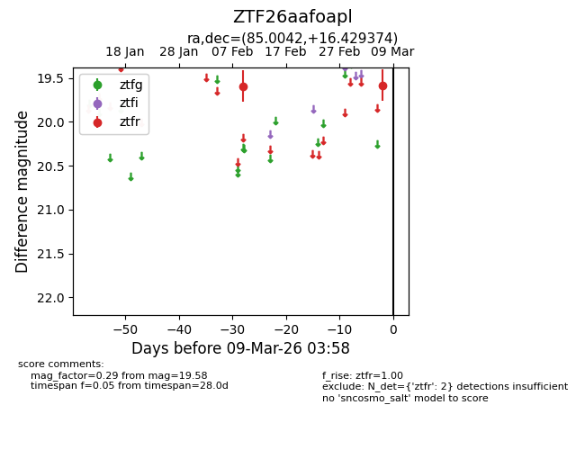
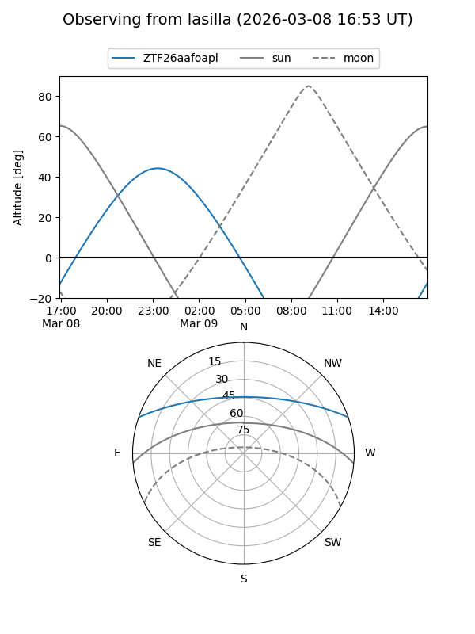
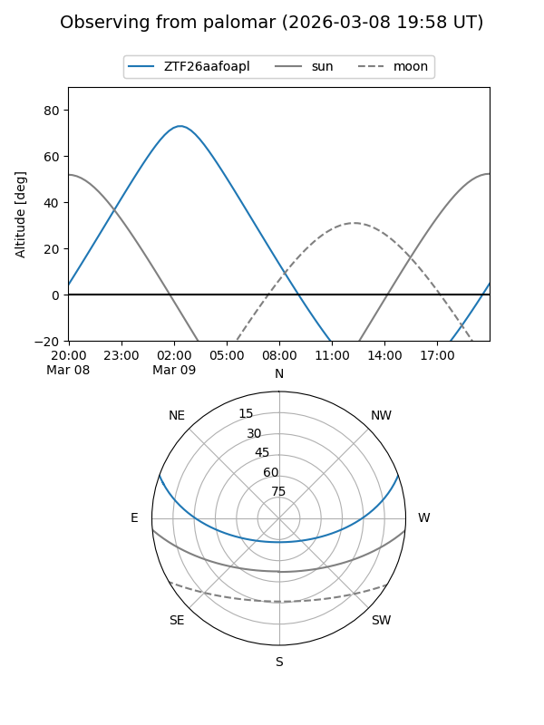

ZTF26aafoapl
Target ZTF26aafoapl at 2026-03-09 03:59
Aliases and brokers:
FINK: link
Lasair: link
ALeRCE: link
alt names
ZTF26aafoapl (ztf,fink_ztf)
Coordinates:
equatorial (ra, dec) = 85.0042,+16.42937
equatorial (HMS+DMS) = 05:40:01.00,+16:25:45.75
galactic (l, b) = (190.0230,-7.62989)
Flags:
Photometry:
last ztfr=19.58
2 ztfr detections
Lightcurve

Visibility


Additional plots